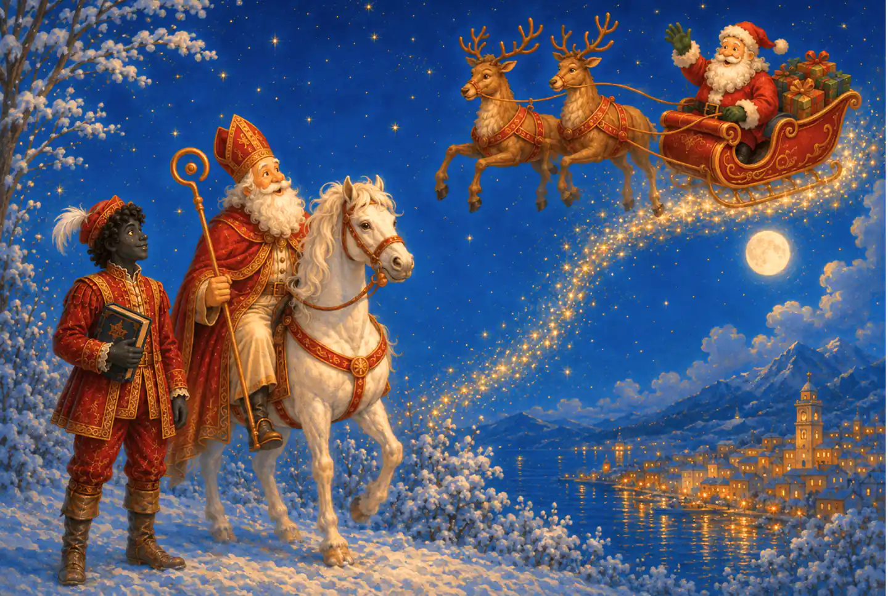
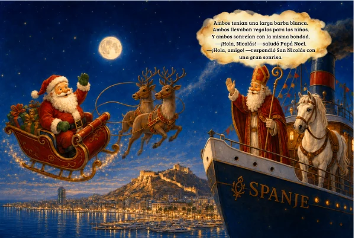
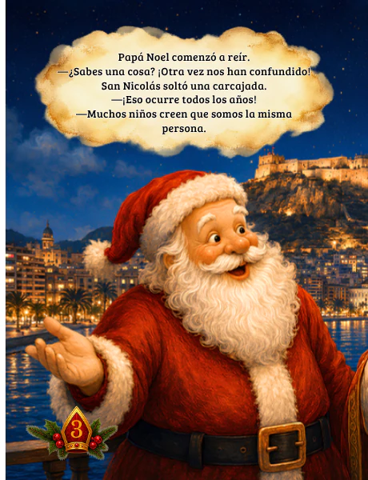
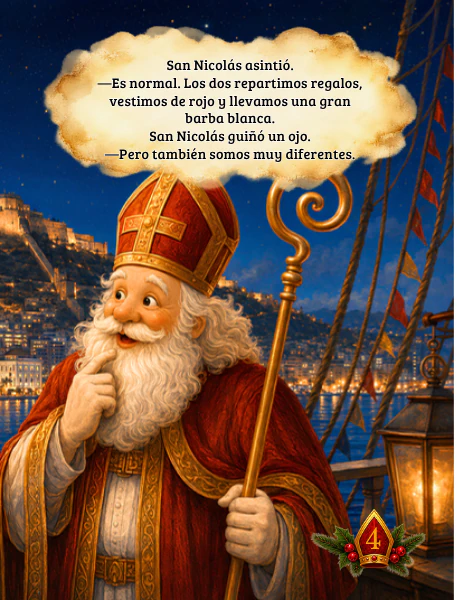
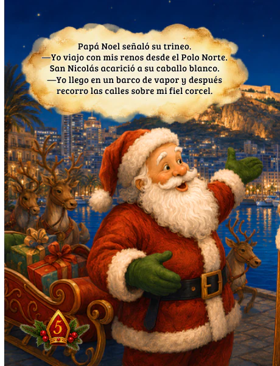
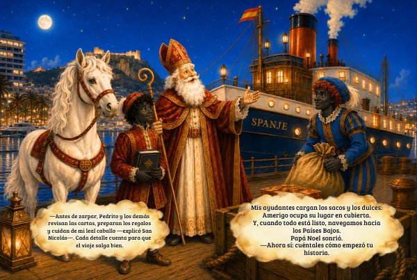

Édition physique horizontale avec des illustrations en double page.
Acheter l'édition reliée →
Acheter l’édition espagnole reliéeAccueil › Mes livres › L'origine du Père Noël : Saint Nicolas
✦ Disponible
L'histoire qui précéda la légende
L'origine du
Père Noël :
Saint Nicolas
Avant le traîneau, les cadeaux et le costume rouge, il y eut un homme, une légende et un voyage qui transforma Noël pour toujours.
Relié : 91 pages · Kindle : 46 pages · Édition espagnole.
Deux formatsIllustrations horizontalesLecture en famille
Disponible
Choisissez comment
découvrir l'histoire.
Achetez l'édition espagnole en relié ou sur Kindle. Le lien s’adapte à Amazon Espagne ou à votre boutique Amazon grâce au lien universel.
Édition espagnoleRelié · Kindle
Chaque double page apparaît comme une grande composition horizontale.
Lire sur Kindle →Achat géré par AmazonLien d’achat selon votre paysDonnées éditoriales vérifiables
À propos du conte
De saint Nicolas
au Père Noël.
Le conte part de la figure de saint Nicolas pour faire découvrir aux lecteurs l'origine d'une tradition qui, avec le temps, inspirera le personnage du Père Noël.
À travers une aventure illustrée, le livre parle de générosité, d'entraide et de la manière dont une histoire peut voyager entre les lieux et les générations sans perdre sa magie.
Pages réelles du livre
Découvrez les cinq premières pages.
Ouvrez un extrait réunissant les cinq premières pages narratives de l’édition originale espagnole, sans couverture ni crédits.





À l'intérieur du livre
Une édition créée
pour lire et explorer.
La composition visuelle fait partie de la narration et accompagne chaque moment de l'aventure.
Une histoire d'origine
Un voyage narratif vers saint Nicolas et la tradition qui finira par donner forme au Père Noël.
Illustrations horizontales
Des scènes amples et détaillées, disponibles dans les éditions reliée et Kindle.
Des valeurs à partager
Générosité, solidarité et empathie accompagnent une lecture destinée aux enfants et aux adultes.
Informations éditoriales
Disponibilité pour les librairies.
Informations de distribution de l’édition espagnole reliée.
Édition espagnole reliée — statut IngramSpark : « Title Available ». Cela signifie que cette édition précise peut être commandée par les librairies et les distributeurs via le réseau de distribution d’IngramSpark ; cela ne signifie pas que toutes les librairies l’ont en stock. Vous pouvez la demander en librairie en indiquant l’ISBN-13 de l’édition.
- ISBN-13 · relié espagnol
- 9788409924981
- ISBN-10
- 8409924986
- Kindle · ASIN
- B0H98JJD4W
Questions fréquentes
Tout ce qu'il faut savoir
avant de choisir.
Informations actualisées sur les éditions disponibles de L'origine du Père Noël : Saint Nicolas.
Peut-on déjà acheter le livre ?
Oui. L'édition espagnole est disponible sur Amazon en version reliée et Kindle.
Dans quels formats est-il publié ?
Il est disponible en édition reliée et Kindle. Les deux versions conservent ses illustrations horizontales.
Combien de pages comporte le livre ?
L'édition reliée compte 91 pages. L'édition Kindle réunit chaque double page en une grande composition horizontale et compte 46 pages.
Y aura-t-il une édition anglaise ?
Oui. Une édition anglaise indépendante est prévue, mais elle n'est pas encore disponible.
Également dans la collection
Découvrez les autres histoires
Deux contes illustrés sur la tradition, l'empathie et des personnages qui laissent une empreinte.